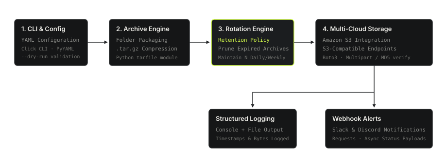

Backup For You — Cloud Backup Automation CLI
A modular, open-source Python CLI utility packaged with pyproject.toml that automates archive compression, retention policies, and upload of directory backups to Amazon S3 and S3-compatible cloud storage providers.
The Engineering Problem
System backups in small to mid-scale engineering environments often face common operational hurdles:
- Unmanaged Storage Costs: Backups accumulate indefinitely without automated rotation policies, bloating cloud storage expenditure.
- Silent Failures: Scripts executing silently in cron jobs fail without alerting the engineering team when network timeouts or permission errors occur.
- Provider Lock-in: Many backup tools are strictly coupled to proprietary cloud SDKs rather than generic, S3-compatible APIs (such as MinIO, Wasabi, or DigitalOcean Spaces).
The Objective: Build a clean, declarative CLI utility in Python that manages the entire backup lifecycle — from local tarball compression and policy-driven rotation to multi-cloud S3 uploads and webhook notifications.
Execution Lifecycle Architecture
The tool processes backups through a modular, step-by-step pipeline ensuring data integrity at every stage.

Pipeline Steps:
- CLI & Configuration: Parses command flags via
Clickand validates schema fromconfig.yamlusingPyYAML. - Archive Creation & Compression: Packages designated directories into timestamped
.tar.gzarchives via Python'starfilemodule. - Retention & Rotation Engine: Evaluates retention limits (e.g. keep N most recent archives) and safely prunes expired snapshots.
- Multi-Cloud S3 Upload: Streams compressed archives to Amazon S3 or S3-compatible storage endpoints via
Boto3. - Structured Logging & Alerts: Emits structured execution logs and dispatches asynchronous status payloads to Slack and Discord webhooks via
Requests.
Key Engineering Decisions
Declarative YAML Configuration
Designed a schema-driven YAML configuration system. This allows operators to declare backup paths, storage buckets, endpoint URLs, and retention limits once, enabling effortless headless scheduling via cron or systemd.
Pre-Flight Safety Validation (--dry-run)
Implemented a dedicated --dry-run flag that verifies directory paths, checks storage credentials, and calculates expected archive sizes and rotation candidates without modifying local files or writing remote cloud bytes.
Modular Storage Interface
Structured the storage layer behind an abstract interface (storage/base.py). This decouples backup orchestration from the specific S3 backend (storage/s3.py), facilitating future multi-provider extensions.
Multi-Platform Webhook Alerting
Integrated failure and success notifications through standardized Slack and Discord webhook schemas, ensuring engineering teams receive immediate alerts with failure tracebacks if a scheduled run encounters network or storage faults.
Command Line Interface Usage
Packaged using modern standard packaging (pyproject.toml) for clean CLI installation.
Technology Specifications
| Module / Role | Technology | Role in System |
|---|---|---|
| CLI Framework | Click | Command line interface parsing, option validation, and help formatting |
| Cloud Storage SDK | Boto3 | Amazon S3 client connection, multipart streaming, and bucket operations |
| Configuration Engine | PyYAML | Declarative YAML configuration parsing and path schema validation |
| Archive Engine | Python tarfile / gzip | High-ratio directory compression into standard `.tar.gz` format |
| Alerts & Webhooks | Requests | HTTP POST payload dispatching to Slack and Discord webhook URLs |
| Packaging Standard | pyproject.toml | Modern PEP 517/518 build metadata and CLI entry-point configuration |